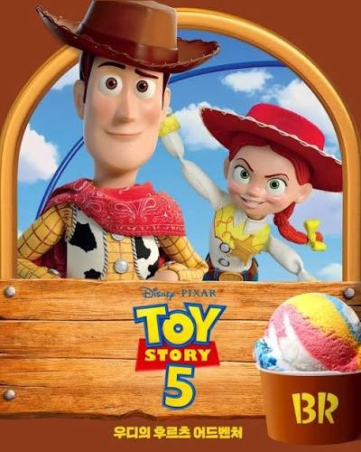

Toy Story 5 × Baskin-Robbins
A film release turned into a month of flavours, cakes and goods — timed to opening day.개봉일에 맞춰 한 달치 플레이버·케이크·굿즈로 옮긴 영화 협업.



- Client
- Baskin-Robbins Korea
- Location
- Seoul, Korea
- Campaign
- June 2026
- Role
- Creative Marketing Team Lead
- Scope
- IP sourcing with Disney Korea, campaign theme, flavour and cake direction, merchandise
Built with The Walt Disney Company Korea around the release of Toy Story 5. A film tie-in has a fixed clock: everything has to land before opening day and still have somewhere to go afterwards.
Two flavours took their cue from Woody and Buzz — one a fruit sherbet built for colour, the other an apple-yoghurt read on the suit. The cake line carried the ensemble, including a three-tier party cake with a character-shaped fork, so a family table became part of the release rather than an afterthought.
월트 디즈니 컴퍼니 코리아와 함께 토이 스토리 5 개봉에 맞춰 진행했습니다. 영화 협업에는 고정된 시계가 있습니다. 모든 것이 개봉 전에 도착해야 하고, 그 뒤에도 갈 곳이 남아 있어야 합니다.
플레이버 2종은 우디와 버즈에서 출발했습니다. 하나는 색을 위한 과일 샤베트, 다른 하나는 수트 컬러를 옮긴 청사과 요거트. 케이크 라인이 나머지 캐릭터를 받아냈고, 캐릭터 모양 3단 포크를 넣은 파티 케이크로 가족 식탁 자체가 개봉의 일부가 되게 했습니다.
Toy Story is © Disney/Pixar. Produced with The Walt Disney Company Korea. Shown as client work.토이 스토리는 © Disney/Pixar. 월트 디즈니 컴퍼니 코리아와 협업. 클라이언트 작업으로 게재합니다.


The film opens once. The month has to open every day.영화는 한 번 개봉합니다. 한 달은 매일 열려야 합니다.